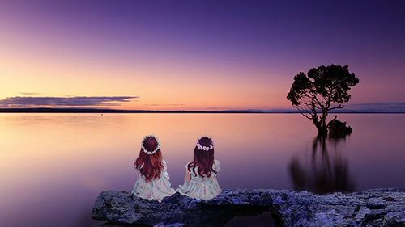

ご覧いただきありがとうございます
はじめまして。
HP作成やPhotoshopを使用してレタッチやデザインをしています。
「自分から何かを生み出す」ことをして生きていきたいという目標からwebの勉強を始めました。
この気持ちが伝わりますように。最後まで見ていただければ嬉しいです。
MENU
はじめまして。
HP作成やPhotoshopを使用してレタッチやデザインをしています。
「自分から何かを生み出す」ことをして生きていきたいという目標からwebの勉強を始めました。
この気持ちが伝わりますように。最後まで見ていただければ嬉しいです。
はじめに。唐突ですが私は若くありません。
仕事をすることは好きで今までの転職回数が６回となかなかの職歴を持っています。
どんな仕事かというと職種がバラバラでまとめることが難しいのですが
営業・事務はもちろん経験あり、相談に乗ったり出会いをつなげたりと振り返ると
多種多様な仕事をしてきました。
自分の糧になることを多く経験できたことに自分は幸運だと思っています。
ただ、これからは自らの力で「何か」を生み出したいとふと思ったのです。

初めは仕事で使うExcelで集計作業をしていた際にもっと効率よくできないかと調べたところVBAに出会いました。
VBAでプログラムを組みボタンを１つ押すだけでこれまでに数日かかっていた作業が一瞬で終わった時に「自分が生み出す」という感覚を実感しました。
そこからPhotoshop・HTML・CSS・SCSS・PHP・javascriptを学びました。
仕事をすると「疲れた」や「休みたい」などの感情が誰でもあると思います。
私も仕事をするのは楽しいけど常に疲れていましたがwebは何故か疲れないしずっと楽しいのです。(肩は凝るし目は疲労してますが)
目指すところは人に喜んでもらえること。
会社員だったころは与えられた仕事を提供していましたがこれからは自分の力で人のお役に立てる人間になりたい。
web業界は若い方が多く、というか若い人しかいないのではないかという勝手なイメージです。
ではそんな界隈におばちゃんが飛び込んでも…と諦めるのは嫌なのでこれまでの経験を活かしてこの世界で生きていきたいのです。
スタイリッシュなデザインや女性だからこその可愛いHPや写真を作っていきたいと思います。
webの作業は日々学ぶことが多く、例えばプログラミングにしても言語がたくさんあり、ここまで取得したら終わりということがありません。
この年齢になってもまだまだ成長できることに感謝しながら今後も自身のスキルアップに精進していきます。
長くなりましたがここまで読んでいただき本当にありがとうございます。